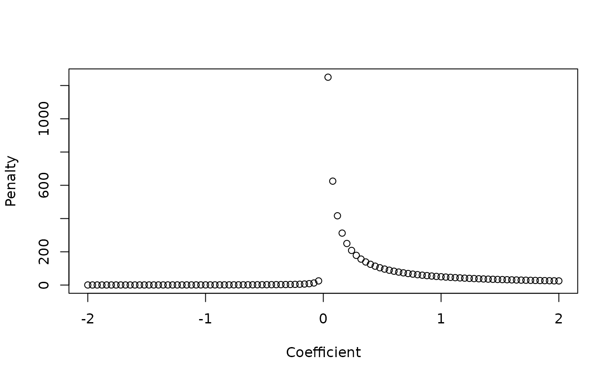
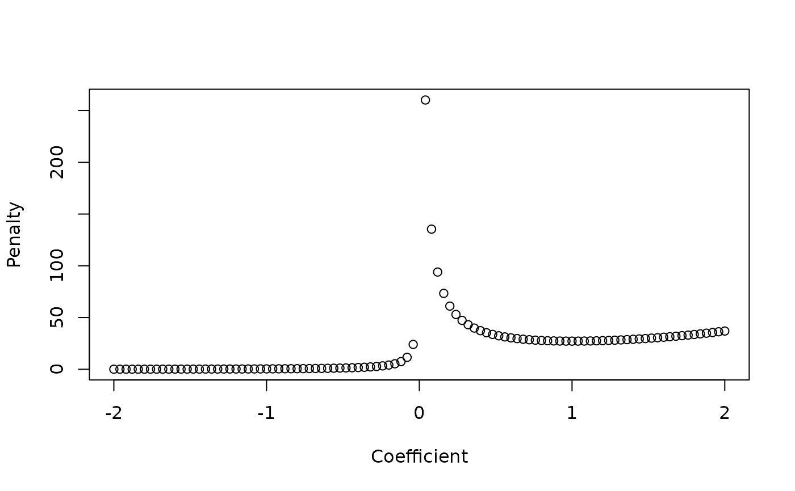

Function to set penalties according to hypotheses
Arguments
- coefs
Vector of estimated coefficients through a Ridge regression.
- expectation
Expected/Hypothetical signal of the coefficient for a given covariate. Should take value
hyp = -1orhyp = +1depending on the expected signal of the coefficient. Ifexpectation = 0, no change is made and the penalty ifpenalty.factor = 1/abs(coef)**gamma.- phi_hyp
Additional penalty constant for the hypothesis-based penalties. A value in the interval 1, Inf where 1 is no additional penalty and higher values correspond to higher penalties when
Examples
# set coefficients
coefs <- c(-1, -0.5, -0.1, 0.8, 0.3, -0.1)
expected_sign <- -1
hypothesis_func(coefs)
#> [1] 1.000000 2.000000 10.000000 1.250000 3.333333 10.000000
x <- seq(-2, 2, length.out = 101)
plot(x, exp(x), ylab = "Penalty", xlab = "Coefficient")
plot(x, hypothesis_func(x), ylab = "Penalty", xlab = "Coefficient")
plot(x, hypothesis_func(x, phi_hyp = 50), ylab = "Penalty", xlab = "Coefficient")

plot(x, exp(x)*hypothesis_func(x, phi_hyp = 10), ylab = "Penalty", xlab = "Coefficient")
